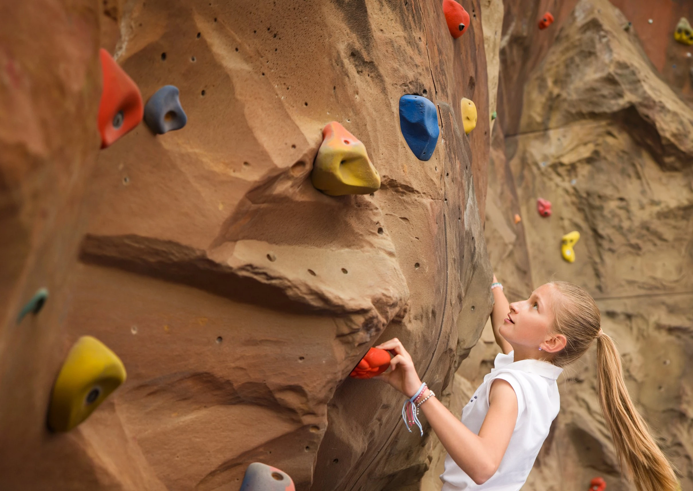

Some schools need a full campaign. Others need a clear-eyed look at the images they already have. Wherever you’re starting from, every engagement is built on the same foundation: 15 years of knowing what international schools need their images to do, and more than 200 marketing photography campaigns in over 30 countries.

The core offer
Full Strategic Shoot
The complete package: strategy, planning and photography, from the first call to the final edit.
We start by looking at how your school presents itself, turn your brand pillars into a tailored shot list, and then I spend one to three days capturing the moments that prove it.
Best forSchools preparing a new campaign, website or prospectus.
Audit of your website, brand pillars and current imagery
Kickoff call to align on the stories you want to tell
Tailored shot list, organized by pillar and age group
Drafted teacher and parent communications, ready for your team to send
One to three days on location, sized to your school
Final edit delivered within 72 hours
Recommended images for each brand pillar
Audit01
Ready.
Audit, kickoff call and shared goals.
Plan02
Set.
Shot list, schedule and communications.
Capture03
Shine.
One to three days on location. Final edit in 72 hours.
13–18Photo opportunities per day
1–3 daysPer shoot
72hFinal edit delivered
2 yearsOf campaign-ready imagery
“
He always finds the way to make projects run more smoothly while helping our schools get the best results out of their photoshoots.
Maria Emilia CasetGlobal Brand Marketing Manager · Nord Anglia Education
Other ways to work together
Start smaller.Or think bigger.
Not every school needs the full package right away, and some need more than one campaign. These options meet you where you are.
Entry point
Marketing Visual Audit
A standalone review of how your school’s words and images work together. I map your brand language against the images you already use, show where they align and where they drift apart, and give you clear, practical recommendations.
Brand language map from your website
Review of the images on your key pages
The gaps between what you say and what you show
Prioritized, practical recommendations
Best forSchools not yet ready for a shoot, or looking for a fresh perspective.
For schools and school groups that want imagery that never goes stale. Plan your next shoots ahead, lock in your dates and pricing, and keep your visual story consistent from one campaign to the next.
Future shoot dates reserved in advance
Price protection for the length of the partnership
Annual remote check-in on how your images are working
Optional in-house training included
Best forSchool groups, and schools planning beyond a single campaign.
Small-group online sessions for your in-house photographers and content creators: honest, practical feedback on their work, and techniques they can use the next day. Staff change. Standards shouldn’t.
Paul, a particularly huge thank you. Your creativity, patience and exceptional eye for detail have been invaluable. You’ve gone above and beyond to capture the very essence of Sherfield, and I genuinely appreciate the energy, professionalism and commitment you’ve brought to this project. It’s been an absolute pleasure working with you.
Yetunde SmithHead of Admissions, Marketing & Communications · Sherfield School, Hampshire, UK
FAQ
Before youask.
Don’t see your question here? I’m happy to answer it directly.
Ideally three to four weeks before the shoot. That leaves time for your discovery brief, two short planning calls, and the most important date of all: sending teachers their activity options about two weeks before the shoot.
How long is a typical shoot?
Most shoots run two days on location. One day can work for smaller schools with a very clear brief; three days suits large schools building an image library from scratch.
A typical day covers 13–18 photo opportunities, each lasting 20–30 minutes.
How long is a shoot day?
Up to eight and a half hours, including a 30-minute lunch break, in one continuous block. The day can be scheduled to suit your timetable, but it can’t be split into separate sessions, such as a morning and an evening with a long break in between.
Want to include an evening event? We simply start the day later.
What do you need from our team?
About ten minutes for the discovery brief, two planning calls, and a point person on the day. I draft the activity list and the emails to teachers and parents; your marketing team sends them, so requests come from a familiar name.
On the day, a school liaison guides me between locations, acts as a second pair of eyes, and looks after safeguarding.
Will the shoot disrupt lessons?
As little as possible. We start by working with teachers to find what’s already happening in the week of the shoot, which is the least disruptive option of all. Where there are gaps, teachers choose from a short list of activities that fit their timetable, rather than being assigned one.
How do you protect students’ privacy?
Your up-to-date photo consent list is shared before the shoot, and students without consent are kept out of frame. Images shown publicly on this website are shown with express consent, or have been altered to remove identifying features.
It’s also why my portfolio is private: schools and families trust me with their images, so I share the work only with school staff, through a personal access link.
How many images do we receive, and when?
For a two-day shoot, a final edit of around 300 images, with my top picks flagged, delivered within 72 hours of the shoot or as agreed. That’s typically enough campaign-ready imagery to cover about two years of marketing.
Do you offer video?
Not yet, but it’s on the way. I’m building it on the same philosophy as my photography: real moments, real voices, no scripts. If video is on your wishlist, mention it in your discovery brief, and you’ll be among the first to hear when it’s ready.
Do you travel?
Yes. I’m based in Prague and have photographed schools in more than 30 countries, across Europe, Asia, the Middle East and the Americas. Travel expenses are billed separately.
How is a project priced and booked?
Every engagement is tailored to your school, so pricing is shared after your discovery brief and a short conversation about what you need. Dates are locked in with a signed contract and a 50% deposit.
Next step
Your next campaign.My full attention.
Every engagement is tailored to your school, so pricing is shared after a short conversation about what you need.
Some schools need a full campaign. Others need a clear-eyed look at the images they already have. Wherever you’re starting from, every engagement is built on the same foundation: 15 years of knowing what international schools need their images to do, and more than 200 marketing photography campaigns in over 30 countries.
The core offer
Full Strategic Shoot
The complete package: strategy, planning and photography, from the first call to the final edit.
We start by looking at how your school presents itself, turn your brand pillars into a tailored shot list, and then I spend one to three days capturing the moments that prove it.
Best forSchools preparing a new campaign, website or prospectus.
What’s included
Audit of your website, brand pillars and current imagery
Kickoff call to align on the stories you want to tell
Tailored shot list, organized by pillar and age group
Drafted teacher and parent communications, ready for your team to send
One to three days on location, sized to your school
Final edit delivered within 72 hours
Recommended images for each brand pillar
01
Ready.
Audit
Audit, kickoff call and shared goals.
02
Set.
Plan
Shot list, schedule and communications.
03
Shine.
Capture
One to three days on location. Final edit in 72 hours.
13–18Photo opportunities per day
1–3 daysPer shoot
72hFinal edit delivered
2 yearsOf campaign-ready imagery
“
He always finds the way to make projects run more smoothly while helping our schools get the best results out of their photoshoots.
Maria Emilia CasetGlobal Brand Marketing Manager · Nord Anglia Education
Not every school needs the full package right away, and some need more than one campaign. These options meet you where you are.
Entry point
Marketing Visual Audit
A standalone review of how your school’s words and images work together. I map your brand language against the images you already use, show where they align and where they drift apart, and give you clear, practical recommendations.
Brand language map from your website
Review of the images on your key pages
The gaps between what you say and what you show
Prioritized, practical recommendations
Best forSchools not yet ready for a shoot, or looking for a fresh perspective.
For schools and school groups that want imagery that never goes stale. Plan your next shoots ahead, lock in your dates and pricing, and keep your visual story consistent from one campaign to the next.
Future shoot dates reserved in advance
Price protection for the length of the partnership
Annual remote check-in on how your images are working
Optional in-house training included
Best forSchool groups, and schools planning beyond a single campaign.
Small-group online sessions for your in-house photographers and content creators: honest, practical feedback on their work, and techniques they can use the next day. Staff change. Standards shouldn’t.
Available on its own, or included in the Partnership.
Paul, a particularly huge thank you. Your creativity, patience and exceptional eye for detail have been invaluable. You’ve gone above and beyond to capture the very essence of Sherfield, and I genuinely appreciate the energy, professionalism and commitment you’ve brought to this project. It’s been an absolute pleasure working with you.
Yetunde SmithHead of Admissions, Marketing & Communications · Sherfield School, Hampshire, UK
FAQ
Before youask.
How far ahead should we start planning?
Ideally three to four weeks before the shoot. That leaves time for your discovery brief, two short planning calls, and the most important date of all: sending teachers their activity options about two weeks before the shoot.
How long is a typical shoot?
Most shoots run two days on location. One day can work for smaller schools with a very clear brief; three days suits large schools building an image library from scratch.
A typical day covers 13–18 photo opportunities, each lasting 20–30 minutes.
How long is a shoot day?
Up to eight and a half hours, including a 30-minute lunch break, in one continuous block. The day can be scheduled to suit your timetable, but it can’t be split into separate sessions, such as a morning and an evening with a long break in between.
Want to include an evening event? We simply start the day later.
What do you need from our team?
About ten minutes for the discovery brief, two planning calls, and a point person on the day. I draft the activity list and the emails to teachers and parents; your marketing team sends them, so requests come from a familiar name.
On the day, a school liaison guides me between locations, acts as a second pair of eyes, and looks after safeguarding.
Will the shoot disrupt lessons?
As little as possible. We start by working with teachers to find what’s already happening in the week of the shoot, which is the least disruptive option of all. Where there are gaps, teachers choose from a short list of activities that fit their timetable, rather than being assigned one.
How do you protect students’ privacy?
Your up-to-date photo consent list is shared before the shoot, and students without consent are kept out of frame. Images shown publicly on this website are shown with express consent, or have been altered to remove identifying features.
It’s also why my portfolio is private: schools and families trust me with their images, so I share the work only with school staff, through a personal access link.
How many images do we receive, and when?
For a two-day shoot, a final edit of around 300 images, with my top picks flagged, delivered within 72 hours of the shoot or as agreed. That’s typically enough campaign-ready imagery to cover about two years of marketing.
Do you offer video?
Not yet, but it’s on the way. I’m building it on the same philosophy as my photography: real moments, real voices, no scripts. If video is on your wishlist, mention it in your discovery brief, and you’ll be among the first to hear when it’s ready.
Do you travel?
Yes. I’m based in Prague and have photographed schools in more than 30 countries, across Europe, Asia, the Middle East and the Americas. Travel expenses are billed separately.
How is a project priced and booked?
Every engagement is tailored to your school, so pricing is shared after your discovery brief and a short conversation about what you need. Dates are locked in with a signed contract and a 50% deposit.